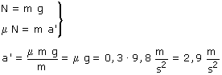

b)
El camión se mueve horizontalmente hacia la derecha con aceleración hacia la izquierda. Si la caja se mueve respecto al camión tendrá distinta aceleración que este: a'. La fuerza de rozamiento entre caja y camión valdrá: μN
Esta fuerza de rozamiento apuntará hacia la izquierda
|
|
 |

Resulta entonces que la caja tiene aceleración hacia la izquierda (2.9 m/s2) mientras que el camión tiene tiene aceleración mayor hacia la izquierda (3 m/s2). Entonces la caja se moverá hacia la derecha respecto al camión. Es lo normal: al frenar el camión la carga se va hacia adelante